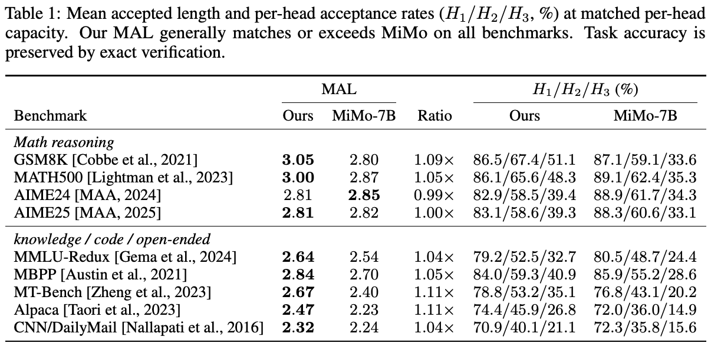
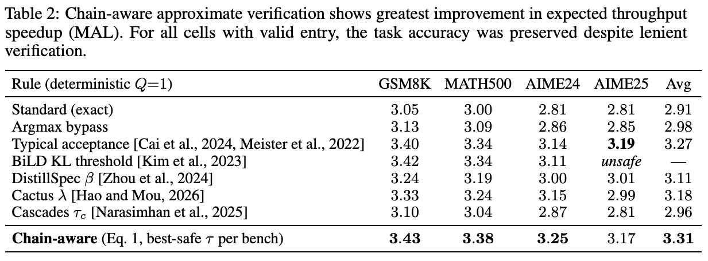
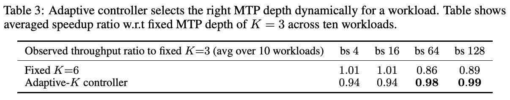
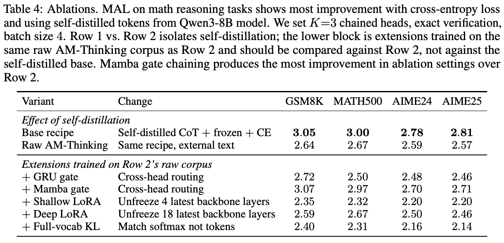
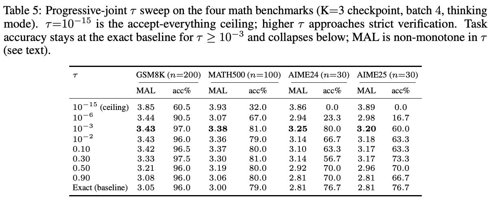
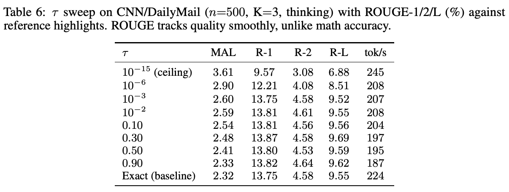
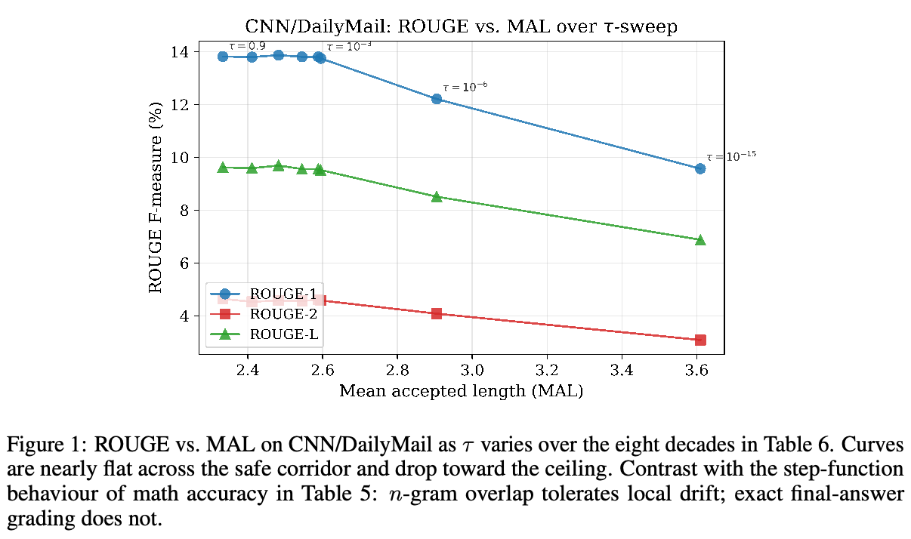
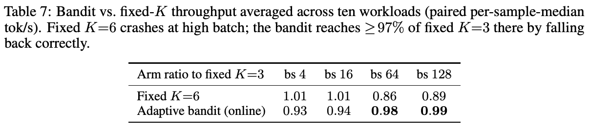
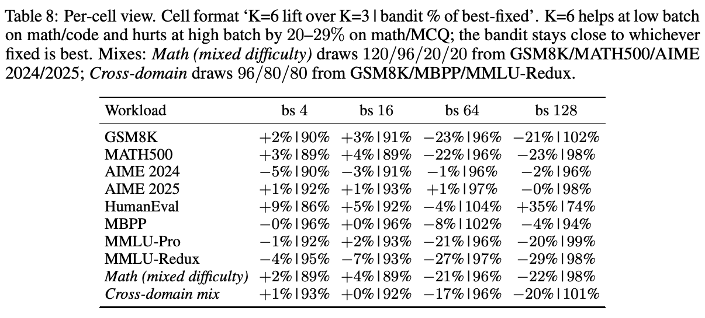
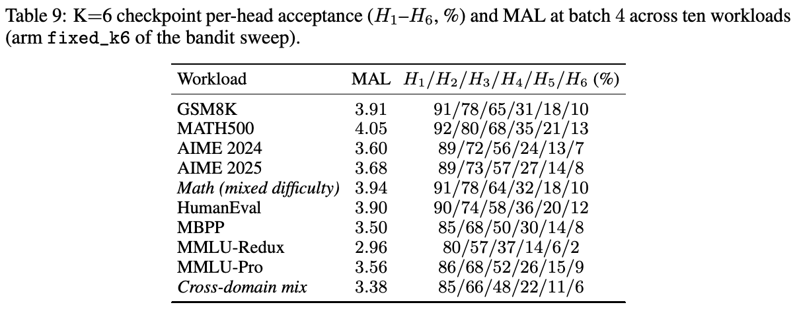

匹配分布，而非计算量：后训练 Multi-Token Prediction 头
Prachi Badarayani，Aidan Jay，Chenghui Zhou，Dayquan Julienne，Yuan Gao，Tianwei Chen，George Zerveas，Ishmam Zabir，Xiren Zhou，Chris Quirk，Xia Song
Microsoft
摘要
Multi-token prediction（MTP）使语言模型每次前向计算可以生成多个后续 token 草稿，从而提高自回归生成吞吐量；对草稿 token 的验证步骤则确保保留主干模型的 token 分布。每个开放发布的 MTP 系列模型（MiMo-7B、DeepSeek-V3、Qwen3），都在数十万亿 token 的完整预训练过程中，将预测头与主干联合训练，因此草稿器质量在预训练时就已确定。我们研究：在目标模型生成的 chain-of-thought 上进行一次轻量后训练，是否足以在冻结推理模型上达到相同的期望吞吐量加速，以及如何优化基于此类 checkpoint 的服务系统。我们有三项发现。1）在冻结的 Qwen3-8B 上，使用 \(K=3\) 个链式 MTP 头，仅用普通交叉熵在约 2.5B token 上进行后训练，即可在数学、代码和知识基准上达到或超过联合训练 MiMo-7B 的期望加速比。相比 MiMo-7B MTP 基线的联合预训练，我们后训练方案所用 MTP 训练 token 少 \(10^3\)–\(10^4\) 倍。2）我们提出一种感知链结构的草稿 token 验证放宽规则，允许相对主干语言模型 token 分布存在有界偏移。这种放宽在保持任务准确率的同时，使各基准期望加速比提高 12%–16%。3）我们提出自适应控制器，动态选择推理时启用的 MTP 头数，展示其能够挽回固定使用最大 MTP 草稿长度造成的最高 11%–14% 加速损失。
1 引言
自回归 decoding 为每个输出 token 支付一次前向计算。Speculative decoding [Leviathan et al., 2023; Chen et al., 2023] 将 \(K\) 个候选 token 交给轻量草稿器，再由目标模型一次前向验证，从而分摊成本；实现的吞吐量加速比随草稿 token 的平均接受长度（MAL）变化。Multi-token prediction（MTP）头 [Gloeckle et al., 2024; Cai et al., 2024; Ankner et al., 2024] 根据目标模型自身隐藏状态预测后续 \(K\) 个 token。DeepSeek-V3 [DeepSeek-AI, 2024]、MiMo-7B [LLM-Core Xiaomi, 2025] 和 EAGLE-3 [Li et al., 2025b] 在预训练规模上将 MTP 头与主干联合训练，使草稿器被固定在预训练时的模型快照上。〔译注：本句关于 EAGLE-3 的说法按原文保留；EAGLE-3 原论文描述的是冻结目标模型后训练草稿模块。〕
我们研究联合预训练成本是 MTP 质量的内在要求，还是特定训练方案的结果。我们表明，以主干生成的 chain-of-thought 为训练数据，后训练 MTP 头能够以少 \(10^3\)–\(10^4\) 倍的训练计算量，匹配或超越联合预训练 MTP 头。这使我们能够探索后训练 MTP 架构，并展示以 Mamba [Gu and Dao, 2023] 串联 MTP 头可改善吞吐量，而主干继续预训练没有帮助。
MTP 推理时，经典 speculative decoding 强制精确匹配分布，这比任务质量所需更加严格。我们提出对 token 的运行联合概率进行链感知阈值判断，以放宽分布匹配要求。（本句原文跨页，已接续。）
第 40 届神经信息处理系统大会（NeurIPS 2026）。Workshop：〔原文未填写名称〕。
（本页开头关于链感知阈值判断的跨页句已接续至第 1 页。）我们表明，这种放宽持续提高以平均接受长度（MAL）表示的期望吞吐量加速比，同时不损害任务准确率（第 3 节）。生产工作负载使用 MTP 头时，固定草稿大小会降低高 batch size 下观察到的实际吞吐量。固定草稿大小，也无法在小 batch size 的可预测文本生成中利用更长 MTP 头预测。因此，我们提出利用在线吞吐量反馈、动态选择启用头数的自适应控制器，展示相比默认固定草稿长度的 MAL 改善（第 4 节）。
2 在目标生成的 chain-of-thought 上后训练
MTP 头接收隐藏状态 \(h_t=f_\theta(x_{<t})\)，其中 \(f_\theta\) 为以 \(\theta\) 参数化的主干语言模型，\(x_{<t}\) 为主干基于输入提示生成的续文。我们有三个 MTP 头 \(g^1_{\theta_1},g^2_{\theta_2},g^3_{\theta_3}\)，分别产生后续 token 草稿 \(d_{t+1},d_{t+2},d_{t+3}\)，遵循 \(g^1_{\theta_1}(h_t,x_t)=d_{t+1}\)、\(g^2_{\theta_2}(h_t,d_{t+1})=d_{t+2}\) 和 \(g^3_{\theta_3}(h_t,d_{t+2})=d_{t+3}\)。分布保持的验证计算 [Leviathan et al., 2023] 接受长度为 \(l\in\{0,1,2,3\}\) 的草稿前缀 \([d_{t+1},\ldots,d_{t+l}]\)，因此一次前向生成 \(l+1\) 个 token，而常规自回归模型 \(f_\theta\) 只生成一个 token。期望吞吐量加速比，或平均接受长度（MAL），为 \(\mathbb E[l+1]\)，即每次验证提交的期望 token 数。各头接受率为 \(\alpha_1,\ldots,\alpha_K\) 时，\(\mathrm{MAL}=1+\sum_{k=1}^K\prod_{j=1}^k\alpha_j\)。
架构与目标。我们采用 LLM-Core Xiaomi [2025] 的链式 MTP 头：头 \(g^k_{\theta_k}\) 接收 \(h_t\) 与上一头 \(g^{k-1}_{\theta_{k-1}}\) 的 unembedding 输出之 argmax（即 token \(d_k\)）的拼接。每个头为与主干同宽的单个 transformer 层，内部为输入 token 生成 embedding，并共享冻结语言模型的 unembedding 头。每个头增加约 200M 可训练参数，与 MiMo-7B 每头参数预算相匹配。训练最小化逐头交叉熵
\[\mathcal L=-\frac1K\sum_k\sum_t\log p^{(k)}(d_{t+k}\mid h_t,d_{t+k-1}),\]
其中，\(p^{(k)}\) 为 MTP 头 \(g^k_{\theta_k}\) 给出的概率，\(k=0\) 时 \(d_t=x_t\)。仅更新头参数 \(\theta_k\)，主干参数 \(\theta\) 保持冻结。训练时，第 \(k\) 头以上一头 \(k-1\) 的 argmax（即 \(d_k\)）为条件，与推理时链式结构匹配。主要实证结果训练 \(K=3\) 个 MTP 头；第 4 节自适应 MTP 控制器使用 \(K=6\) 变体。
On-policy 目标生成语料。我们使用 AM-Thinking [a-m-team, 2024] 的 1.89M 提示训练 MTP 头，覆盖通用聊天、代码、数学和指令遵循。对每个提示，在 thinking mode 下从 Qwen3-8B 采样完整 chain-of-thought 响应，每条最多 8K token；将提示—响应对打包为 2048 token 的定长训练序列，每个 epoch 约 2.5B 训练 token。完整设置见附录 F。最接近的既有方案是 DistillSpec [Zhou et al., 2024] 和 EAGLE-3 [Li et al., 2025b]。
3 链感知的近似验证
经典 speculative decoding 通过拒绝采样，在均匀随机数低于 \(p^{(k)}(d_{t+k})/f_\theta(d_{t+k})\) 时接受草稿 token \(d_{t+k}\)，从而精确保留目标输出分布 [Leviathan et al., 2023]。〔译注：原文比值按草稿概率／目标概率书写，与所引经典算法的目标概率／草稿概率相反；此处保留原文。〕对于分布尖锐的推理目标，这一保证强于任务质量实际所需。既有放宽方法通过独立评估每个草稿位置，用少量分布偏差换取更高 MAL，包括 typical acceptance [Cai et al., 2024; Meister et al., 2022]、Top-k 一致性、BiLD 散度门控 [Kim et al., 2023]，以及 DistillSpec [Zhou et al., 2024]、Cactus [Hao and Mou, 2026]、Cascades [Narasimhan et al., 2025] 的连续调节参数。这些逐位置标准丢弃了 \(K\) 个草稿位置的链条共同携带的信号：一条整体置信度高的链中出现单个低概率位置，不同于连续两个平庸位置。我们提出对严格分布匹配保证的链感知放宽，接受长度为 \(m^\star\) 的最长草稿前缀 \(d_{t+1:m^\star}\)，要求其运行几何平均目标概率不低于阈值 \(\tau\)：
\[m^\star=\max\left\{m\leq K:\left(\prod_{k=1}^m p^{(k)}(d_{t+k})\right)^{1/m}\geq\tau\right\}.\tag{1}\]
〔译注：原文称此处为目标概率，但前文将 \(p^{(k)}\) 定义为 MTP 头概率；符号不一致，照录公式。〕
4 自适应草稿深度
增加 MTP 头数会单调提高期望吞吐量加速比（MAL），但受 GPU 内存瓶颈影响，观察到的实际运行吞吐量加速比通常在三个 MTP 头时达到峰值 [DeepSeek-AI, 2024]。我们观察到，batch size 较低或文本高度可预测时，更多 MTP 头能针对单请求前向计算分摊验证成本，较大的头数 \(K\) 可能有收益。但当 batch size 较高，或文本序列难以预测时，更深 MTP 头的接受收益不再覆盖额外验证成本，草稿器成为瓶颈，此时较小 \(K\) 获得最高实际加速。生产观察 [Li et al., 2025a] 证实，超过一定 batch 阈值往往不值得运行推测生成，因此实践建议通常是关闭 MTP，或固定使用三个 MTP 头，以免吞吐量下降。
我们提出自适应控制器，在运行时动态选择合适的 MTP 头数 \(K\)，在 batch size 与文本预测难度变化时实现最优吞吐量。我们采用第 2 节后训练方案，学习 \(K=6\) 个 MTP 头。实现一个具有六个臂的在线下置信界 bandit 控制器 [Auer et al., 2002; Lattimore and Szepesvári, 2020]，选择 MTP 草稿深度 \(\{K=1,\ldots,K=6\}\)。每个 decoding 窗口将观察到的批处理吞吐量归于当前臂，更新逐臂运行均值。短暂轮询探索六个臂后，我们利用运行均值最大的臂，并定期重新探索；当一个臂连续 \(C\) 个窗口以相对差距 \(\delta\) 领先时，提交该选择；如果在 \(W_{\max}\) 个窗口内没有臂满足提交条件，则回退到下置信界最高的臂，即均值减一个标准差。独立吞吐量样本使每个运行均值以 \(O(1/\sqrt{N_a})\) 的速率集中于真实均值，其中 \(N_a\) 是臂 \(a\) 的样本数。差距低于 \(\delta\) 时，可能提交次优臂，损失不超过 \(\delta\)。超参数和伪代码见附录 F。
5 实验
设置。我们在 thinking mode 下评估四个数学推理基准，以及代码、知识等领域的五个基准。主干为冻结 Qwen3-8B [Yang and Team, 2025]，配备 \(K=3\) 个链式 MTP 头。基线为 MiMo-7B-RL [LLM-Core Xiaomi, 2025]，每头架构和参数量与我们匹配（附录 E）。两个系统均使用精确拒绝采样验证，batch 为 4，在 vLLM 上使用单块 A100-80GB GPU。

后训练在 MAL 上匹配或超过联合预训练。在 MAL 上，后训练头总体在所有基准上达到或超越 MiMo-7B。第一头接受率稍有利于 MiMo：数学基准上约 87%–89%，我们约 83%–87%，因为联合预训练对首位置有小幅优势。最深的头则相反：MiMo 在所有数学基准上都约饱和于 33%–35%，而我们的第三头在相同 MTP 链架构下获得更高接受概率。附录 A 对 MTP 头串联、主干继续预训练及训练损失函数进行消融，表明以 Mamba [Gu and Dao, 2023] 串联 MTP 头，通过利用草稿 token 依赖提高 MAL，而切换为针对主干的 KL 训练损失，或对主干模型继续预训练，都没有帮助。（本句原文跨页，已接续。）
（本页开头关于 Mamba、KL 和继续预训练的跨页句已接续至第 3 页。）
近似验证。我们将公式 1 与五种验证放宽基线比较，每种均用单个参数控制：argmax bypass、typical acceptance [Cai et al., 2024; Meister et al., 2022]、BiLD [Kim et al., 2023]、DistillSpec \(\beta\) [Zhou et al., 2024]、Cactus \(\lambda\) [Hao and Mou, 2026] 和 Cascades \(\tau_c\) [Narasimhan et al., 2025]。对每条规则扫描其参数，在任务准确率保持精确验证的 ±3 个百分点以内的约束下，报告每基准 MAL 最大的点。因此，表 2 每列按构造保证准确率保持；在测试的所有参数下都超出该区间的单元格标记 unsafe。在 GSM8K、MATH500 和 AIME 2024 上，最佳方法（BiLD 与链感知规则）的 MAL 差距仅为 0.02–0.06。四种规则在 AIME 2025 上拉开差距：BiLD 在扫描的所有阈值都超出准确率区间，而链感知规则在 \(\tau=0.30\) 时仍处于区间内，MAL 为 3.17，准确率 73.3%，精确验证为 76.7%。〔译注：原文 73.3% 与 76.7% 相差 3.4 个百分点，超过本段所述 ±3 个百分点；数据与结论照录。〕四基准平均，链感知规则达到 3.31，相对精确验证 MAL 提高 14%，且各基准准确率保持。

自适应 Multi-Token Prediction。表 3 汇总十个工作负载上自适应控制器的平均收益（逐工作负载细分见附录 D 表 8）。对于深 MTP 头有帮助的每个工作负载，控制器选择 \(K=6\)；有害时则退回较小 \(K\)。固定 \(K=6\) 在 batch 为 64／128 时损失 11%–14% 吞吐量，因为深头验证成本超过接受收益。自适应 MTP 控制器付出一定开销，消除这一权衡：当 \(K=6\) 有利时获得深头收益，batch size 增大、GPU 争用上升时回退到较低 \(K\)。Bandit 算法开销在低 batch size 下平均损失最高 6% 加速比，但在生产常见的高 batch size 下，挽回大部分损失吞吐量。

讨论与结论。在目标生成 chain-of-thought 上后训练，以少 \(10^3\)–\(10^4\) 倍的 MTP 训练计算量，在数学、代码、指令遵循和知识基准上达到或超越联合预训练 MTP 基线。后训练还允许探索预训练不便开展的架构选择：Mamba 式 MTP 头串联提高期望加速比，而全词表 KL 损失与主干继续预训练不能改善期望加速比（表 4）。训练数据自蒸馏带来最大的期望加速收益。对于推理目标，精确拒绝采样过于保守；链感知放宽在保持生成结果准确率的同时，持续改善期望吞吐量加速比（MAL）。在线自适应 MTP 控制器使我们能够随 batch size、GPU 争用和文本可预测性变化，动态选择合适 MTP 头数。
参考文献
a-m-team. AM-Thinking：用于 LLM 后训练的精选推理提示语料。https://huggingface.co/datasets/a-m-team/AM-Thinking-v1-Distilled, 2024.
Zachary Ankner, Rishab Parthasarathy, Aniruddha Nrusimha, Christopher Rinard, Jonathan Ragan-Kelley, and William Brandon. Hydra：用于 Medusa decoding 的顺序依赖草稿头。arXiv preprint arXiv:2402.05109, 2024.
Peter Auer, Nicolò Cesa-Bianchi, and Paul Fischer. 多臂 bandit 问题的有限时间分析。Machine Learning, 47(2–3):235–256, 2002.
Jacob Austin, Augustus Odena, Maxwell Nye, et al. 使用大语言模型进行程序合成。arXiv preprint arXiv:2108.07732, 2021.
Tianle Cai, Yuhong Li, Zhengyang Geng, Hongwu Peng, Jason D. Lee, Deming Chen, and Tri Dao. Medusa：采用多个 decoding 头的简单 LLM 推理加速框架。载于 International Conference on Machine Learning (ICML), 2024.
Charlie Chen, Sebastian Borgeaud, Geoffrey Irving, Jean-Baptiste Lespiau, Laurent Sifre, and John Jumper. 通过 speculative sampling 加速大语言模型 decoding。arXiv preprint arXiv:2302.01318, 2023.
Mark Chen, Jerry Tworek, Heewoo Jun, et al. 评估在代码上训练的大语言模型。arXiv preprint arXiv:2107.03374, 2021.
Kyunghyun Cho, Bart van Merriënboer, Caglar Gulcehre, Dzmitry Bahdanau, Fethi Bougares, Holger Schwenk, and Yoshua Bengio. 使用 RNN 编码器—decoder 学习用于统计机器翻译的短语表示。arXiv preprint arXiv:1406.1078, 2014.
Karl Cobbe, Vineet Kosaraju, Mohammad Bavarian, Mark Chen, Heewoo Jun, Lukasz Kaiser, Matthias Plappert, Jerry Tworek, Jacob Hilton, Reiichiro Nakano, Christopher Hesse, and John Schulman. 训练验证器求解数学文字题。2021.
DeepSeek-AI. DeepSeek-V3 技术报告。arXiv preprint arXiv:2412.19437, 2024.
Aryo Pradipta Gema et al. 我们完成 MMLU 了吗？arXiv preprint arXiv:2406.04127, 2024.
Fabian Gloeckle, Badr Youbi Idrissi, Baptiste Rozière, David Lopez-Paz, and Gabriel Synnaeve. 通过 multi-token prediction 获得更好、更快的大语言模型。arXiv preprint arXiv:2404.19737, 2024.
Albert Gu and Tri Dao. Mamba：采用选择性状态空间的线性时间序列建模。arXiv preprint arXiv:2312.00752, 2023.
Yongchang Hao and Lili Mou. Cactus：通过受约束接受的 speculative sampling 加速自回归 decoding。载于 International Conference on Learning Representations (ICLR), 2026.
Edward J Hu, Yelong Shen, Phillip Wallis, Zeyuan Allen-Zhu, Yuanzhi Li, Shean Wang, Lu Wang, and Weizhu Chen. LoRA：大语言模型的低秩适配。arXiv preprint arXiv:2106.09685, 2021.
Sehoon Kim, Karttikeya Mangalam, Suhong Moon, Jitendra Malik, Michael W. Mahoney, Amir Gholami, and Kurt Keutzer. 使用 Big Little Decoder 的 speculative decoding。载于 Advances in Neural Information Processing Systems (NeurIPS), 2023.
Tor Lattimore and Csaba Szepesvári. Bandit 算法。Cambridge University Press, 2020.
Yaniv Leviathan, Matan Kalman, and Yossi Matias. 通过 speculative decoding 实现 transformer 快速推理。载于 International Conference on Machine Learning (ICML), 2023.
Rui Li, Zhaoning Zhang, Libo Zhang, Huaimin Wang, Xiang Fu, and Zhiquan Lai. Nightjar：用于大语言模型服务的动态自适应 speculative decoding。arXiv preprint arXiv:2512.22420, 2025a.
Yuhui Li, Fangyun Wei, Chao Zhang, and Hongyang Zhang. EAGLE-3：通过训练时测试扩展大语言模型推理加速。arXiv preprint arXiv:2503.01840, 2025b.
Hunter Lightman, Vineet Kosaraju, Yura Burda, Harri Edwards, Bowen Baker, Teddy Lee, Jan Leike, John Schulman, Ilya Sutskever, and Karl Cobbe. 让我们逐步验证。arXiv preprint arXiv:2305.20050, 2023.
Chin-Yew Lin. ROUGE：自动评估摘要的工具包。Text Summarization Branches Out, 2004.
LLM-Core Xiaomi. MiMo：释放语言模型的推理潜力——从预训练到后训练。arXiv preprint arXiv:2505.07608, 2025.
MAA. AIME 2024 试题。https://artofproblemsolving.com/wiki/index.php/AIME_Problems_and_Solutions, 2024.
MAA. AIME 2025 试题（第一、二部分）。https://artofproblemsolving.com/wiki/index.php/2025_AIME_I_Problems, 2025.
Clara Meister, Tiago Pimentel, Gian Wiher, and Ryan Cotterell. 局部典型采样。Transactions of the Association for Computational Linguistics, 2022.
Ramesh Nallapati, Bowen Zhou, Cícero dos Santos, Çaglar Gülçehre, and Bing Xiang. 使用 sequence-to-sequence RNN 及进一步方法进行抽象式文本摘要。CoNLL, 2016.
Harikrishna Narasimhan, Wittawat Jitkrittum, Ankit Singh Rawat, Seungyeon Kim, Neha Gupta, Aditya Krishna Menon, and Sanjiv Kumar. 通过 speculative decoding 实现更快的级联。载于 International Conference on Learning Representations (ICLR), 2025.
Rohan Taori et al. Stanford Alpaca：遵循指令的 LLaMA 模型。https://github.com/tatsu-lab/stanford_alpaca, 2023.
Yubo Wang et al. MMLU-Pro：更鲁棒、更具挑战性的多任务语言理解基准。arXiv preprint arXiv:2406.01574, 2024.
An Yang and Qwen Team. Qwen3 技术报告。arXiv preprint arXiv:2505.09388, 2025.
Lianmin Zheng, Wei-Lin Chiang, Ying Sheng, et al. 利用 MT-bench 和 Chatbot Arena 评判 LLM-as-Judge。arXiv preprint arXiv:2306.05685, 2023.
Yongchao Zhou, Kaifeng Lyu, Ankit Singh Rawat, Aditya Krishna Menon, Afshin Rostamizadeh, Sanjiv Kumar, Jean-François Kagy, and Rishabh Agarwal. DistillSpec：通过知识蒸馏改进 speculative decoding。载于 International Conference on Learning Representations (ICLR), 2024.
A 消融
表 4 区分两类比较。第 1 行与第 2 行隔离自蒸馏效应：语料规模相同、其他方案不变时，用目标生成的 CoT 代替原始 AM-Thinking 文本，MAL 增加 0.14–0.41。下半部分报告基于同一个原始 AM-Thinking 基线（第 2 行）训练的扩展，因此应与第 2 行比较，而非与自蒸馏基础模型比较。在相同语料基线上，GRU [Cho et al., 2014] 跨头门控有小幅损失；Mamba [Gu and Dao, 2023] 门控使 MAL 平均提高 0.28，在 GSM8K 上最高提高 0.43，但四个数学基准中有三个仍不及自蒸馏。主干上的 LoRA [Hu et al., 2021] adapter，在浅层（4 层）和深层（18 层）配置中都为中性或负面。针对主干下一 token 分布的全词表 KL 不改善 MAL。这与第 2 节的对齐论点一致：on-policy 目标生成语料，已消除这些干预试图纠正的协变量偏移。具体架构与超参数见第 F 节。

B 数学数据集以外的覆盖
我们后训练的头，在 MMLU-Redux [Gema et al., 2024]、MBPP [Austin et al., 2021]、MT-Bench [Zheng et al., 2023]（聊天，\(n=80\)）、Alpaca [Taori et al., 2023]（指令遵循，\(n=800\)）和 CNN/DailyMail [Nallapati et al., 2016]（摘要，\(n=500\)）上，MAL 均超过 MiMo-7B。全部数值见表 1；在 MT-Bench（H3 提高 15 个百分点）和 Alpaca（提高 12 个百分点）上，深头差距显著扩大，与仅针对推理的主要结果一致：on-policy 目标生成 CoT 训练出了感知链结构的草稿器，其相对联合预训练的优势在训练域外仍保留。MT-Bench 和 Alpaca 的任务准确率评分需要 LLM-as-Judge，本文不作这方面承诺；CNN/DailyMail 则在第 C 节报告相对参考摘要要点的 ROUGE。
C 链感知验证的完整 \(\tau\) 扫描
我们在四个数学基准（表 5）和 CNN/DailyMail（表 6）上，将公式 1 的链感知 \(\tau\) 在八个数量级范围内扫描，从 \(\tau=10^{-15}\)（全部接受的上限，对照内部 log-space 截断 \(\log10^{-12}=-27.6\) 验证）至 \(\tau=0.90\)（接近严格验证）。有两项效果值得关注。
MAL 总体随 \(\tau\) 降低而增加。随着放宽 \(\tau\)，即使与主干分布不完全匹配，越来越多草稿也自然被接受。然而，在 \(\tau=10^{-6}\) 时，第一头门控较松（H1=95%），但几何平均惩罚累积，拒绝约一半第二头位置（H2=49%–55%），使总体 MAL 低于 \(\tau=10^{-3}\)：后者第一头门控更紧，但链式累积惩罚没那么严厉。低于 \(\tau=10^{-12}\) 后，log-space 截断使链标准自动满足，MAL 升至 \(K+1=4\) 的上限。
数学准确率是 MAL 的阶梯函数；ROUGE 则是平滑曲线。在数学任务中，安全区间 \(\tau\in[10^{-3},0.90]\) 保持精确验证基线的任务准确率；一旦 \(\tau\) 离开区间，AIME24／25 下降至 0%，MATH500 在上限处降至 32%。数学评分很脆弱：一个错误数值步骤就会破坏 \boxed{·} 答案。CNN/DailyMail 上，同样的 \(\tau\) 扫描得到平滑 ROUGE 曲线（图 1）：在该区间内，ROUGE-1／L 保持在 13.75–13.87，至上限处下降为 9.57／6.88，因为 n-gram 重合奖励局部主题流畅性，而主干模型即使在损坏的 decoding 中仍保留这一能力。这是指标的性质，而非训练方案的性质。对于按最终答案正确性评分的部署，操作范围为 \(\tau\in[10^{-3},0.90]\)，峰值位于 \(\tau=10^{-3}\)，比精确验证 MAL 高 0.30–0.45。
〔译注：原文“保持准确率”及 ROUGE-1／L 范围的陈述，与下面表 5、表 6 的部分数值不一致；正文和原表均按原文保留。〕


D 自适应草稿深度：多基准覆盖
正文表 3 刻画 GSM8K 上的 bandit。表 7 展示多工作负载情况，除表 1 数据集外，还包含 HumanEval [Chen et al., 2021] 和 MMLU-Pro [Wang et al., 2024]。固定提交 \(K=6\) 追求低 batch 下的 MAL 优势，在低 batch 时与 \(K=3\) 的差距处于噪声范围，约高 1%；但高 batch 时，深头验证成本超过接受收益，吞吐量下降 11%–14%。在线 bandit 在所有设置达到固定 \(K=3\) 的 93%–98%，高 batch 时通过正确回退达到至少 97%。因此，bandit 是固定 \(K=3\) 的安全替代，最差单元格为 0.90；也是相对固定 \(K=6\) 的严格 Pareto 改善，后者最高损失 29%。表 8 展开至逐工作负载单元格，表 9 记录底层 \(K=6\) 头的表现。
E 基线选择：MiMo-7B-RL 与 Qwen3-8B
我们以 MiMo-7B-RL [LLM-Core Xiaomi, 2025] 为比较对象，因为它是唯一匹配本文报告协议、公开可用的联合预训练 MTP 基线。其他选择至少在三个具体方面之一不满足要求：（i）DeepSeek-V3 [DeepSeek-AI, 2024] 仅发布一个 MTP 头，而非用于比较逐头表现所需的 \(K=3\) 链；（接下页）



（接上页）（ii）EAGLE-3 [Li et al., 2025b] 使用单个循环草稿模块，而非逐深度预测头，因此逐头接受率不具有相同定义；（iii）最大的开放 MTP 系列 checkpoint 依附的主干，比我们的目标大一个数量级，任何 MAL 比较都会混淆草稿器质量与基础模型质量。MiMo-7B-RL 在约 7B 参数的 RL 微调主干上发布全部三个链式头，与我们每头约 200M 参数链的自然目标规模最接近。
选择 Qwen3-8B [Yang and Team, 2025] 为目标，是因为它是参数量最接近 MiMo-7B 的免费可用基础模型，差距约在 15% 内，并在表 1 四个数学基准上报告有竞争力的质量。使用 70B 级目标会改变所有后续数值，混淆我们提出的训练方案问题：在相同基础模型质量预算下，对链式头进行一次普通后训练，能多接近联合预训练？将参数量匹配在约 15% 内，使答案能从 MAL 数值直接看出。（本句原文跨页，已接续。）

（本页关于参数量匹配和联合预训练比较的跨页内容已接续至第 9 页。）
F 可复现性细节
本节汇集复现本文数值所需的设置细节。本次投稿不发布代码和权重；以下方案足够完整，可供独立重新实现。
头架构。每个头是与主干同宽的单个 transformer decoder 层，配置为 4096 隐藏维度、32 个 attention 头、14336 FFN、RMSNorm、SwiGLU、RoPE，与 Qwen3-8B 匹配；其后接冻结主干 LM head。头 \(k\) 接收 \([h_t;\operatorname{embed}(\arg\max_v p^{(k-1)}(v\mid h_t,\ldots))]\) 作为输入；拼接向量先经线性层投影到隐藏宽度，再进入 transformer 层。每头参数量约 200M，约等于一个 Qwen3-8B decoder 层，与 MiMo-7B 匹配。
训练。训练 5 个 epoch，每 epoch 约 2.5B 个目标生成 token；有效 batch 为 240 时，约 19k 个优化器步骤。AdamW 的 \(\beta_1=0.9\)、\(\beta_2=0.95\)，权重衰减 0.1，学习率 \(5\times10^{-5}\)，先进行 3% 线性 warmup，再余弦衰减到零。对冻结主干使用 gradient checkpointing，即即时重新计算激活，不更新主干参数。序列长度为 2048，采用打包。\(K=6\) 变体使用相同调度，并增加两个共享逐头架构的头。〔译注：原文写“two additional heads”，与从 \(K=3\) 扩展至 \(K=6\) 的数量不符；此处保留原文。〕
On-policy 语料。来自 AM-Thinking [a-m-team, 2024] 的 1.89M 推理提示。冻结 Qwen3-8B 在 thinking mode 下，使用部署 decoding 参数补全每个提示：temperature 为 0.6、top-p 为 0.95、Top-k 为 20。提示／响应对逐字拼接，不过滤。
消融架构。每项消融替换基础方案的一个组件，在原始 AM-Thinking 语料（表 4 第 2 行）上训练，调度和优化器与基础方案相同。
GRU 跨头门控。在每个头边界 \(k-1\to k\)，插入单层 GRU 单元，接收当前头隐藏状态 \(h_t^{(k-1)}\in\mathbb R^{4096}\)，以及头 \(k-1\) 的 argmax-token embedding，后者维度为 4096，来自主干 embedding 表；输出门控隐藏状态 \(\tilde h_t^{(k)}\in\mathbb R^{4096}\)，供头 \(k\) 替代基础 \(h_t\) 使用。具体而言，令 \(g^{(k)}\in\mathbb R^{4096}\) 为 GRU 状态，
\[g^{(k)}=\operatorname{GRU}\!\left(g^{(k-1)},[h_t^{(k-1)};\operatorname{embed}(\hat x_{t+k-1}^{(k-1)})]\right),\] \[\tilde h_t^{(k)}=W_o g^{(k)}+h_t^{(k-1)},\qquad W_o\in\mathbb R^{4096\times4096}.\]
采用 residual connection 保留基础信号。每次头间传递约增加 50M 门控参数，端到端训练，主干冻结。
Mamba 式跨头门控。接口与 GRU 门控相同，但以选择性状态空间块 [Gu and Dao, 2023] 替换 GRU 单元。在位置 \(t\) 沿头索引堆叠 \([h_t^{(0)},\ldots,h_t^{(k-1)}]\)，构成长度为 \(K\) 的虚拟序列；块在其上运行，\(d_{\mathrm{model}}=4096\)、状态维度 \(d_{\mathrm{state}}=16\)、扩展因子 2、卷积长度 4。链仅有 \(K=3\) 或 \(K=6\) 步，因此 selective scan 简化为小型展开递归；我们采用 Gu and Dao [2023] 的参考公式，而不使用其内核融合变体，因为序列太短，无需专门 CUDA 路径。Residual 与输出投影均与 GRU 门控匹配。每次头间传递约增加 80M 门控参数。（本段原文跨页，已接续。）
（本页开头关于 Mamba 参考实现与参数量的跨页段落已接续至第 10 页。）
浅层 LoRA。LoRA adapter [Hu et al., 2021] 的秩 \(r=8\)、\(\alpha=16\)、dropout 为 0.05，作用于 36 个主干层中最后 4 层的 Q／K／V／O attention 投影。主干学习率为 \(1\times10^{-5}\)，头学习率为 \(5\times10^{-5}\)。Adapter 总参数约 1M。
深层 LoRA。秩、\(\alpha\)、dropout 和主干学习率与浅层相同，应用于 36 个主干层中最后 18 层（即一半主干）的 Q／K／V／O attention 投影。Adapter 总参数约 4.7M。
全词表 KL。每个位置在完整词表上计算损失 \(D_{\mathrm{KL}}(p_\theta\Vert p^{(k)})\)，替代公式 ?? 中逐 token 的硬交叉熵。〔译注：“Eq. ??”为原文未解析的公式引用。〕
验证。采用 vLLM V1 speculative decoding 路径，加上第 3 节的验证规则扩展。公式 1 的链阈值在 log-space 执行，截断为 \(\log(p)\geq-27.6\)，即 \(p\geq10^{-12}\)。
自适应 \(K\) 控制器（LCB）。控制器是在线多臂 bandit，具有六个臂 \(\{K=1,\ldots,K=6\}\)。每臂奖励为近满载条件下、\(W=8\) 步测量窗口内观察到的批处理吞吐量 \(\mathrm{tps}_a=\text{接受 token 数}/\text{实际耗时}\)。只有在途 batch 至少达到容量的 \(3/4\) 时才计入一步，因此丢弃波次结束时的排空尾部。每臂至少经过 \(n_{\min}=2\) 个轮询窗口后，以 \(\beta=0.7\) 指数平滑更新逐臂运行估计 \((\hat\mu_a,\hat v_a)\)：
\[\hat\mu_a\leftarrow\beta\hat\mu_a+(1-\beta)\mathrm{tps}_a,\qquad\hat v_a\leftarrow\beta\hat v_a+(1-\beta)(\mathrm{tps}_a-\hat\mu_a^{\mathrm{old}})^2.\]
因此 \(\hat s_a=\sqrt{\hat v_a}\) 是该臂测量值的离散程度。随后控制器利用 \(\arg\max_a\hat\mu_a\)，每 \(P=8\) 个窗口定期重新探索。当某臂在初步稳定后连续 \(C=3\) 个窗口为 argmax，且相对第二名领先 \(\delta=0.015\)，即 \((\hat\mu_{(1)}-\hat\mu_{(2)})/\hat\mu_{(2)}\geq\delta\) 时，首次触发提交；若在 \(W_{\max}=30\) 个窗口内未同时满足两项条件，则强制提交。提交时选择下置信界 \(\hat\mu_a-z\hat s_a\) 最高的臂，\(z=1\)，而非原始 argmax。提交后，剩余会话的深度固定：没有分类器前向计算，没有窗口记账，也没有逐步主机同步。报告数值对应提交后的片段。第一个窗口前先 warmup 100 步，使 KV cache 和 CUDA graph 池达到稳态。
算法 1 自适应 \(K\) 吞吐量 bandit（LCB，单次服务会话）
- 输入：臂集合 \(\mathcal A=\{K=1,\ldots,6\}\)；窗口 \(W=8\)；稳定阶段 \(n_{\min}=2\)；探索周期 \(P=8\)；提交稳定性 \(C=3\)；差距 \(\delta=0.015\)；硬上限 \(W_{\max}=30\)；LCB \(z=1\)；EMA \(\beta=0.7\)；占用率至少 \(3/4\)。
- 对 \(a\in\mathcal A\)，\((\hat\mu_a,\hat v_a,N_a)\leftarrow(0,0,0)\)；\(\mathrm{best\_prev}\leftarrow-1\)；\(\mathrm{run}\leftarrow0\)；\(\mathrm{committed}\leftarrow-1\)；\(w\leftarrow0\)。
- 在 decoding 期间循环：
- 在当前臂 \(a\) 下收集由 \(W\) 个近满载步骤组成的窗口，测量 \(\mathrm{tps}_a\)。
- \((\hat\mu_a,\hat v_a)\leftarrow(\beta\hat\mu_a+(1-\beta)\mathrm{tps}_a,\ \beta\hat v_a+(1-\beta)(\mathrm{tps}_a-\hat\mu_a^{\mathrm{old}})^2)\)；\(N_a\mathrel{+}=1\)；\(w\mathrel{+}=1\)。
- 若 \(\min_aN_a<n_{\min}\)：进入稳定阶段，轮询采样最少的臂。
- \(a\leftarrow\arg\min_aN_a\)；继续下一轮循环。
- 结束条件分支。
- \(\mathrm{best}\leftarrow\arg\max_a\hat\mu_a\)；若 \(\mathrm{best}=\mathrm{best\_prev}\)，\(\mathrm{run}\leftarrow\mathrm{run}+1\)，否则设为 1；\(\mathrm{best\_prev}\leftarrow\mathrm{best}\)。
- \(\mathrm{lead}\leftarrow(\hat\mu_{(1)}-\hat\mu_{(2)})/\hat\mu_{(2)}\)。
- 若 \(\mathrm{run}\geq C\) 且 \(\mathrm{lead}\geq\delta\)，或 \(w\geq W_{\max}\)：
- \(\mathrm{committed}\leftarrow\arg\max_a(\hat\mu_a-z\sqrt{\hat v_a})\)。LCB 的取舍：可靠表现优于偶发峰值。
- 返回 committed；剩余会话固定深度。
- 结束条件分支。
- 若 \(w\bmod P\neq0\)，令 \(a\leftarrow\mathrm{best}\)，否则选择下一个不同于 best 的臂；定期重新探索。
- 结束循环。
评估。我们使用 vLLM [Leviathan et al., 2023] 在 Qwen3-8B 上的 speculative decoding 实现，同时评估本文 checkpoint 和 MiMo-7B-RL。Batch 为 4，使用单块 A100-80GB GPU，thinking mode 及与训练相同的 decoding 参数。数学最终答案从 \boxed{·} 提取，用 math_verify 评分；选择题按单字母匹配；代码通过执行单元测试评分；CNN/DailyMail [Nallapati et al., 2016] 使用相对参考摘要要点的 ROUGE-1／2／L [Lin, 2004]。
计算资源。头训练使用 4 个节点，每节点配备 8 块 A100-80GB，tensor parallel 为 1，data parallel 为 32。在 2.5B token 上训练一个 epoch 约需 8 小时，5 个 epoch 约 40 小时。\(K=6\) 变体成本约为 \(K=3\) 的 1.4 倍。
LLM 使用披露
大语言模型用于编辑本文文字，以及搭建实验脚本与绘图代码骨架。所有数值结果、表格、插图和技术主张，均由作者对照源代码输出核查；LLM 未被用于生成所报告的任何数值，也未用于撰写任何技术主张。